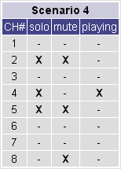

|
| Beatnik Soundbank |
The following diagram shows the various parts that make up the soundbank that is built into the Beatnik Player...
The Beatnik soundbank offers a full complement of General MIDI instruments, in the form of the General MIDI Bank. Beatnik's General MIDI Bank has been modeled to be closely compatible with established GM soundbanks, such as Roland's SoundCanvas GM soundset.
The Special Bank, on the other hand, offers an easy way to expand one's musical palette beyond the limitations of the General MIDI standard. The Special bank contains some very cool textures, some of which stand in as alternatives to their less adventurous counterparts in the General MIDI Bank, and even share the same program numbers. In fact, quite often a program number in the General MIDI Bank will have an instrument that is mirrored at the same program number in the Special Bank, except that the Special Bank's version will have a refreshingly different slant on things. This is convenient and makes it quite easy to change the feel of a composition or user interface sonification, merely by changing a bank number. Of the instruments in the Special Bank, program numbers 112 through 124 are especially useful for sound effects and user interface sonification.
Both the General MIDI Bank and the Special Bank each have a set of 128 chromatic instruments as well as a set of percussion instruments. While there are 128 instrument "slots" in the percussion set for both banks, not all these slots are occupied. For a full list of the chromatic instruments in the General MIDI Bank and the Special Bank, consult the appendix Beatnik Soundbank - Instrument List. For a full list of the percussion instruments in the General MIDI Bank and the Special Bank, consult the appendix Beatnik Soundbank - Percussion Map.
As added "icing on the cake", the Beatnik soundbank also includes a set of over 70 "pre-cooked" musical cues, called Groovoids, to give you a kick start in adding interactive audio to your Web content. For more information on Groovoids, see the section Groovoids below.
| Groovoids |
Groovoids are a collection of "pre-cooked" musical cues, background music, and user-interface type musical effects that comes bundled with the player. Groovoids are an easy way to sonify a Web page because they are built right into the player's soundbank and can start playing immediately. They do not need to download off the Web! Groovoids are also free to use. You can always count on the fact that anyone who has the Beatnik Player will have the same set of Groovoids available so you can sonify a Web site using Groovoids with this reassuring fact in mind. Groovoids also offer a cool way to fill up the blank spaces while visitors are downloading custom musical themes for your Web site.
There are 72 Groovoids available, which are divided into five categories: Background, Fanfare, Hits, UI (User Interface), and Misc. Each Groovoid name is prefixed with the name of the category that it belongs to so that Groovoids "clump" together logically in an alphabetical listing.
For a full list of all the available Groovoids, consult the appendix Beatnik Soundbank - Groovoids.
Groovoids are referred to by name (see the GroovoidNameSTR parameter), and can be triggered to play via scripting using the Music Object API's play method, or embedded into a page using the GROOVOID embedding property.
To summarize, Groovoids have the following key benefits...
| Property Lifetimes |
The various properties that can be queried and modified by the Music Object API can be divided into different categories based upon their "lifetime" - that is, how long they retain their value. Some properties, such as song-specific properties, are more "perishable" than others. The various categories of property lifetimes are discussed below...
The static properties that are defined by the Music Object API first come into being when the "music-object.js" JavaScript file is sourced into a page that is loaded by the browser. This may be before any actual player instances are embedded and may, therefore, also be before the underlying audio engine that is used by the player has been loaded and initialized. The properties that fall into this category include all the Music Object Static Properties.
The underlying audio engine that supports the player is only loaded and initialized when the first player instance is embedded on a page. So, properties that have an audio engine lifetime may only come into being after properties with a Music Object lifetime have already been defined. There is one exception to this rule, though. Because the underlying audio engine remains loaded until all player instances in all windows have been unloaded, a case may arise where properties with an audio engine lifetime already exist - even before a particular window has completed loading in the Music Object API. This is because there may already be another sonified window open that has caused the audio engine to be loaded.
Properties that have an audio engine lifetime, such as reverb setting, will retain their value for as long as the audio engine is loaded. If the engine is unloaded and reloaded during the course of the user's browsing, then the engine lifetime properties will get re-initialized. As an example, assume that the user has just one window open and they visit a sonified page where the reverb gets set to a value other than the engine's default initial value. If they then leave the sonified page, browse to an unsonified page, and then browse further to another sonified page, then when they arrive at the second sonified page the reverb will no longer be set to the value that was set earlier by the first sonified page, but will be re-initialized to the engine's default setting. If, however, the user had another sonified window open all the time while browsing, then the reverb setting will not have been re-initialized.
Properties that have an audio engine lifetime include...
Properties that have a Music Object instance lifetime, such as the ready event handler, are properties that are specific to individual Music Object instances. These properties come into being when a Music Object instance is created and can be set and queried immediately - even before the Music Object instance's associated player instance is embedded in the page.
So, for example, the following code segment is perfectly valid...
myMusicObject = new Music ();
myMusicObject.onReady ('myMusicObject.setVolume (50)');
myMusicObject.magicEmbed ('SRC="my-music-file.rmf"');
|
The above code will successfully register the ready event handler for the Music Object instance, even before its associated player instance is embedded. When the player instance becomes ready, the statement
On the other hand, the following code segment will not work as may be expected...
myMusicObject = new Music ();
myMusicObject.setVolume (50);
myMusicObject.magicEmbed ('SRC="my-music-file.rmf"');
|
In this case, the player's volume will not be affected by the call to the setVolume method. This is because the player volume level property has a player instance lifetime (discussed in further detail in the section Properties With a Player Instance Lifetime). Even though the Music Object instance is already created when the statement
Now, you might think that all that is needed is to move the statement
So, there is truly only one safe way to know exactly when a player instance has been created and is completely initialized and ready to receive control instructions: register a handler for the Music Object instance's ready event, using the onReady method.
Properties that have a Music Object instance lifetime include...
Properties that have a player instance lifetime, such as looping state, are specific to individual player instances. In contrast to properties with a Music Object instance lifetime, these properties only come into being when a Music Object instance's associated player instance is embedded in a page and initialized - not when the Music Object instance is created. So, for any given Music Object instance, properties that have a player instance lifetime come into being after properties with a Music Object instance lifetime.
Properties that have a player instance lifetime include...
Properties that have a song loaded lifetime, such as playing duration, are specific to the file that is currently loaded into a player instance and are reset or modified each time a new file is loaded.
Properties that have a song loaded lifetime include...
Properties that have a song playback lifetime, such as track mute, retain their value only while a song is playing and are typically reset when the player is stopped and started again, or when the player loops the currently playing file. These properties are not reset when playback is paused and then later resumed.
So, for example, the following code segment is perfectly valid...
myMusicObject = new Music ();
myMusicObject.onPlay ('myMusicObject.setTrackMute (0,true)');
myMusicObject.magicEmbed ('SRC="my-music-file.rmf"');
|
The above code will register the play event handler for the Music Object instance and, each time the player begins to play its file, the statement
myMusicObject = new Music ();
myMusicObject.onReady ('myMusicObject.setTrackMute (0,true)');
myMusicObject.magicEmbed ('SRC="my-music-file.rmf" AUTOSTART=FALSE');
|
In this case, the tracks of the song will not be muted when it begins playing because the track mute property has a song playback lifetime. Even though the Music Object instance's associated player instance is guaranteed to be ready when the
Properties that have a song playback lifetime include...
| Method Variations |
For your convenience, many of the methods of the Music Object API offer variations (sometimes referred to as overloaded forms) that take differing parameter sets. Some variations may allow certain parameters to be omitted, while other variations may allow different types to be specified for certain parameters. When using any given method in your sonification code, you should consult that method's reference information to determine what variations are available to you. Each method description in the Instance Methods and Static Methods reference sections will specify the variations that are offered.
There are three styles of method variations that are used in the Music Object API...
For many of the methods in the Music Object API, variations are provided to allow different value types to be used for certain parameters. This increases the flexibility of the methods and opens up more possibilities for how the methods may be used. A classic example is the playNote instance method. One variation of this method can accept a NoteNumber0to127 parameter, allowing an integer to be used for specifying the MIDI note number of the musical note that should be played. Another variation, on the other hand, can accept a NoteNameSTR parameter, allowing a string to be used for specifying the name of the musical note that should be played.

It should never be assumed that a method has a variation accepting a specific alternate parameter type, simply because a similar method has such a variation. For example, while almost all of the callback registering instance methods (such as onPause, onPlay, and onStop, etc.) can accept a JavaScriptSTR parameter in place of a Function parameter, the onMetaEvent instance method cannot accept a JavaScriptSTR parameter, but can only accept a Function parameter. You should always check with the reference section for a method that you are using to verify that it has a specific variation, before attempting to use that variation.
Some methods, such as the fadeVolume instance method, offer very comprehensive parameter sets. With so many ways of customizing the behavior of such methods, using the methods could be quite daunting if all these parameters always had to be specified. It can be quite useful to have the option of omitting some of the more "esoteric" parameters and having these parameters default to the most logical values.
For such methods, then, the parameter sets are designed in such a way that the parameters that are less likely to be needed in typical uses are placed towards the end of the parameter sets. In this way, these optional parameters may be omitted and the methods will resort to using logical default values that suit most typical applications of these methods.
In the example of the fadeVolume instance method, the full parameter set variation of this method accepts five parameters. However, this full parameter set is scaled down progressively by omitting more and more of the optional end parameters. Essentially, the parameter set is whittled away, one parameter at a time, thereby generating method variations that accept four parameters, three parameters, two parameters, one parameter, and even no parameters. This parameter set "erosion" is illustrated in the list of method variations below...
Variations of the fadeVolume Instance Method
Some of the methods provided in the Music Object API offer variations that have greatly varying parameter sets. An example is the playNote instance method, which in addition to the standard form that takes MidiChannel1to16, NoteNumber0to127, Velocity0to127, and NoteDurationMsINT parameters, also offers a form that takes an extended parameter set containing the MidiChannel1to16, BankNumber0to2, ProgramNumber0to255, NoteNumber0to127, Velocity0to127, and NoteDurationMsINT parameters. With the extended form, the additional BankNumber0to2 and ProgramNumber0to255 parameters are "squeezed" into the parameter set between the MidiChannel1to16 and NoteNumber0to127 parameters, making this type of variation different to the type of variation that simply offers optional parameters towards the end of the parameter list that can simply be omitted.
| Constrained Values |
For many integer-type parameters that are used in methods of the Music Object API, values are constrained within those parameters' valid ranges. So, for a parameter that is value-constrained, if a value is specified for the parameter that is below its valid range, then the value is constrained to the lower limit. And if a value is specified for the parameter that is above its valid range, then the value is constrained to the upper limit. This value constraining is applied only where it is deemed appropriate and of value to sonification code.
By relying on the value constraining feature, it becomes very easy to write a simple statement to increase the volume of a Music Object instance. One could do this easily with the statement
Not all integer parameters are value-constrained. For instance, value constraining does not apply to the MidiChannel1to16 parameter, where using a value outside of the valid range for the parameter will result in the method being ignored. In the case of MIDI channel number, if you specify a channel number of 17 it does not make logical sense to constrain the value to 16.
To find out if a particular parameter is value-constrained, check the reference information for that parameter in the Common Parameters reference.
| Magical MIDI Channel Number 0 and Track Number 0 |
As a convenience, many of the instance methods that set channel and track state can accept a magical value 0 for specifying channel or track number. Both channel and track numbers are numbered starting at 1, and so the value 0 is used to indicate that a state setting method should act on all channels or tracks.
By contrast to state setting methods, state querying methods typically do not accept a magical value 0 for specifying channel or track number, since there is no good way for these methods to return a value that represents the states for all channels or tracks. Also, never assume that any specific method for setting channel or track state can accept a magical value 0. Always consult the reference section for any given method to make certain.
This "shortcut" feature can be really useful in developing music remixing applications, for example, where a method like the setController instance method can be used to initialize a specific MIDI controller on all channels in one single operation, or where a method like the setTrackMute instance method can be used to reset track muting for all tracks in a single operation.
Using the magical value 0 feature provides the following key benefits...
Because only one statement is required in order to set a state for all channels or tracks, code can become substantially more compact. Even if you used a for loop to set a state for all channels or tracks in an automated process, there's not way you can beat a single statement.
Because the magical value 0 is in most cases implemented at the player level and not in JavaScript, this approach to setting a state for all channels or tracks can be significantly more zippy than any massive block of statements, or even a for loop. And in certain kinds of interactive audio applications, this kind of performance improvement can make all the difference.
Because there is only one statement where state is being set for all channels or tracks, it becomes really easy to make a modification to the specific state that is being set. Only one statement needs to be edited in order to change a value that is being set for all channels or tracks. Pure simplicity!
For most instance methods that set channel state, the magical value 0 can be specified for channel number to indicate that the method's action should be performed on all 16 MIDI channels. For example, the statement
| BEFORE |
myMusicObject.setController (1,10,0); myMusicObject.setController (2,10,0); myMusicObject.setController (3,10,0); myMusicObject.setController (4,10,0); myMusicObject.setController (5,10,0); myMusicObject.setController (6,10,0); myMusicObject.setController (7,10,0); myMusicObject.setController (8,10,0); myMusicObject.setController (9,10,0); myMusicObject.setController (10,10,0); myMusicObject.setController (11,10,0); myMusicObject.setController (12,10,0); myMusicObject.setController (13,10,0); myMusicObject.setController (14,10,0); myMusicObject.setController (15,10,0); myMusicObject.setController (16,10,0); |
| AFTER (Using Magical MIDI Channel 0) |
myMusicObject.setController (0,10,0);
|
Magical MIDI channel number 0 can be used by the setChannelMute, setChannelSolo, setController, setMonophonic, and setProgram instance methods of the core Music Object API, as well as many other instance methods of various of the Music Object extensions. For any method that can accept a MidiChannel0to16 parameter (ie. where 0 is a legal value), this will be made clear in the reference section for that method.
For most instance methods that set track state, the magical value 0 can be specified for track number to indicate that the method's action should be performed on all tracks of an RMF or MIDI file. For example, the statement
| BEFORE |
for (var trackNo = 1; trackNo <= 64; trackNo++) {
myMusicObject.setTrackMute (trackNo,true);
}
|
| AFTER (Using Magical Track Number 0) |
myMusicObject.setTrackMute (0,true);
|
Magical track number 0 can be used by the setTrackMute and setTrackSolo instance methods of the core Music Object API, as well as many other instance methods of various of the Music Object extensions. For any method that can accept a TrackNumber0to64 parameter (ie. where 0 is a legal value), this will be made clear in the reference section for that method.
In this example, we are creating a new panic instance method using the Music.addPublicInstanceMethods static method of the Music Object Extensibility API. When called, the panic method will have the effect of unmuting and unsoloing all channels and all tracks, as well as resetting all controllers for all channels. The following before-and-after sample code listing compares the unenlightened way of doing it with the "magical" way of doing it...
| BEFORE |
function mo_panic () {
for (var trackNo = 1; trackNo <= 64; trackNo++) {
this.setTrackMute (trackNo,false);
this.setTrackSolo (trackNo,false);
}
for (var channelNo = 1; channelNo <= 16; channelNo++) {
this.setChannelMute (channelNo,false);
this.setChannelSolo (channelNo,false);
}
for (var channelNo = 1; channelNo <= 16; channelNo++) {
this.setController (channelNo,121,0);
}
}
Music.addPublicInstanceMethods ('panic');
|
| AFTER (Using Magical 0) |
function mo_panic () {
this.setTrackMute (0,false);
this.setTrackSolo (0,false);
this.setChannelMute (0,false);
this.setChannelSolo (0,false);
this.setController (0,121,0);
}
Music.addPublicInstanceMethods ('panic');
|
By using the magical value 0, the implementation for the panic method can be tighter - and every little bit of added speed and code size reduction can count when you're working on a performance-critical music remixing application that already has burgeoning blocks of code and reams of control actions to perform.
| Callbacks |
Callbacks make it possible to synchronize events in an HTML page with events that occur within music or audio files. Much of the Music Object API focuses on letting scripting within HTML pages affect and control music and audio, but with the callbacks the wiring can be done in the reverse direction - from the music to the HTML.
Instance callbacks are specific to individual Music Object instances. An example of an instance callback is the onPlay callback, which is triggered each time a Music Object instance enters the playing state. Unique handlers for instance callbacks can be registered per Music Object instance. So, it possible to have one handler registered for the onPlay callback of one instance and another handler registered for the onPlay callback of a different instance.
The following sample code example illustrates this point...
function myMusicObject1OnPlayHandler () {
alert ('myMusicObject1 starts playing');
}
function myMusicObject2OnPlayHandler () {
alert ('myMusicObject2 starts playing');
}
myMusicObject1 = new Music ();
myMusicObject2 = new Music ();
myMusicObject1.onPlay (myMusicObject1OnPlayHandler);
myMusicObject2.onPlay (myMusicObject2OnPlayHandler);
|
In this example, the function "myMusicObject1OnPlayHandler" is being registered as the onPlay callback handler for the Music Object instance "myMusicObject1", and the function "myMusicObject2OnPlayHandler" is being registered as the onPlay callback handler for the Music Object instance "myMusicObject2". The function "myMusicObject1OnPlayHandler" will only get executed when the instance "myMusicObject1" enters the playing state, and not when the instance ""myMusicObject2" enters the playing state. Similarly, the function "myMusicObject2OnPlayHandler" will only get executed when the instance "myMusicObject2" enters the playing state, and not when the instance ""myMusicObject1" enters the playing state.
Whereas instance callbacks are specific to individual Music Object instances, static callbacks are global to the Music Object class. An example of a static callback is the onAudioEngagedChange callback, which is triggered each time there is a change in the audio engaged state of the player's underlying audio engine. While handlers for instance callbacks are registered by calling methods of individual Music Object instances (such as the onPlay and addCallbackHandler instance methods), handlers for static callbacks are registered by calling methods of the Music object (such as the Music.addCallbackHandler static method).
The following callbacks are supported as part of the public authoring level of the Music Object API...
The onAudibleStateChange instance callback is triggered each time there is a change in the audible state of a Music Object instance.
Whenever there is a change in the audible state of an instance, there is a corresponding change in the value of the instance's audible property. A handler for this callback can be registered using the dedicated onAudibleStateChange instance method, the more general addCallbackHandler instance method, or the addOnAudibleStateChange instance method of the Callbacks extension. A handler for this callback can be removed using the dedicated removeOnAudibleStateChange instance method of the Callbacks extension, or the more general removeCallbackHandlers instance method of the Callbacks extension. All handlers registered for this callback using the Callback extension's addOnAudibleStateChange instance method can also be cleared in a single step using the Callback extension's clearOnAudibleStateChange instance method.
The onAudioEngagedChange static callback is triggered each time there is a change in the audio engaged state of the player's underlying audio engine.
At the time that this callback is triggered, the current engaged state of the audio engine can be determined using the Music.isAudioEngaged static method. A handler for this callback can be registered using the Music.addCallbackHandler static method and specifying the string value "onAudioEngagedChange" for the StaticCallbackTypeSTR parameter. Similarly, a handler for this callback can be removed using the Music.removeCallbackHandlers static method of the Callbacks extension and specifying the string value "onAudioEngagedChange" for the StaticCallbackTypeSTR parameter.
The onEngageAudio static callback is triggered after each call to the Music.engageAudio static method.
At the time that this callback is triggered, the value specified in the most recent call to the Music.engageAudio method is reflected in the Music.embedDefaults.AUDIOENGAGED static property. A handler for this callback can be registered using the dedicated Music.onEngageAudio static method or the more general Music.addCallbackHandler static method. A handler for this callback can be removed using the general Music.removeCallbackHandlers static method of the Callbacks extension.
The onLoad instance callback is triggered each time a Music Object instance completes loading in a file.
A handler for this callback can be registered using the dedicated onLoad instance method, the more general addCallbackHandler instance method, or the addOnLoad instance method of the Callbacks extension. A handler for this callback can be removed using the dedicated removeOnLoad instance method of the Callbacks extension, or the more general removeCallbackHandlers instance method of the Callbacks extension. All handlers registered for this callback using the Callback extension's addOnLoad instance method can also be cleared in a single step using the Callback extension's clearOnLoad instance method.
The onMetaEvent instance callback is triggered each time a Music Object instance encounters a meta event while playing an RMF or MIDI file.
A handler for this callback can be registered using the dedicated onMetaEvent instance method, the more general addCallbackHandler instance method, or the addOnMetaEvent instance method of the Callbacks extension. A handler for this callback can be removed using the dedicated removeOnMetaEvent instance method of the Callbacks extension, or the more general removeCallbackHandlers instance method of the Callbacks extension. All handlers registered for this callback using the Callback extension's addOnMetaEvent instance method can also be cleared in a single step using the Callback extension's clearOnMetaEvent instance method. Additionally, specialized meta event filters can be assigned using the addMetaEventHandler instance method of the Callbacks extension, and removed using the removeMetaEventHandlers instance method of the Callbacks extension.
The onOutputVolumeChange instance callback is triggered each time there is a change in a Music Object instance's output volume.
At the time that the handler for this callback is executed, the current output volume can be obtained using the getOutputVolume instance method. A handler for this callback can be registered using the dedicated onOutputVolumeChange instance method, the more general addCallbackHandler instance method, or the addOnOutputVolumeChange instance method of the Callbacks extension. A handler for this callback can be removed using the dedicated removeOnOutputVolumeChange instance method of the Callbacks extension, or the more general removeCallbackHandlers instance method of the Callbacks extension. All handlers registered for this callback using the Callback extension's addOnOutputVolumeChange instance method can also be cleared in a single step using the Callback extension's clearOnOutputVolumeChange instance method.
The onPause instance callback is triggered each time a Music Object instance enters the paused state.
A handler for this callback can be registered using the dedicated onPause instance method, the more general addCallbackHandler instance method, or the addOnPause instance method of the Callbacks extension. A handler for this callback can be removed using the dedicated removeOnPause instance method of the Callbacks extension, or the more general removeCallbackHandlers instance method of the Callbacks extension. All handlers registered for this callback using the Callback extension's addOnPause instance method can also be cleared in a single step using the Callback extension's clearOnPause instance method.
The onPlay instance callback is triggered each time a Music Object instance enters the playing state.
A handler for this callback can be registered using the dedicated onPlay instance method, the more general addCallbackHandler instance method, or the addOnPlay instance method of the Callbacks extension. A handler for this callback can be removed using the dedicated removeOnPlay instance method of the Callbacks extension, or the more general removeCallbackHandlers instance method of the Callbacks extension. All handlers registered for this callback using the Callback extension's addOnPlay instance method can also be cleared in a single step using the Callback extension's clearOnPlay instance method.
The onReady instance callback is triggered for only the first time that a Music Object instance completes loading in its file and becomes ready for scripted control.
A handler for this callback can be registered using the dedicated onReady instance method, the more general addCallbackHandler instance method, or the addOnReady instance method of the Callbacks extension. A handler for this callback can be removed using the dedicated removeOnReady instance method of the Callbacks extension, or the more general removeCallbackHandlers instance method of the Callbacks extension. All handlers registered for this callback using the Callback extension's addOnReady instance method can also be cleared in a single step using the Callback extension's clearOnReady instance method.
The onStop instance callback is triggered each time a Music Object instance enters the stopped state.
A handler for this callback can be registered using the dedicated onStop instance method, the more general addCallbackHandler instance method, or the addOnStop instance method of the Callbacks extension. A handler for this callback can be removed using the dedicated removeOnStop instance method of the Callbacks extension, or the more general removeCallbackHandlers instance method of the Callbacks extension. All handlers registered for this callback using the Callback extension's addOnStop instance method can also be cleared in a single step using the Callback extension's clearOnStop instance method.
Handlers for callbacks can be registered using the dedicated callback instance methods (such as onPause, onPlay, onStop, etc.), the more general addCallbackHandler instance method and Music.addCallbackHandler static method, and the various methods of Music Object Extension - Callbacks.
In the following sample code listing, handlers are being registered for the onPlay and onStop callbacks, using the dedicated onPlay and onStop instance methods, to cause a graphical icon in the page to reflect the playing state of the Music Object instance "myMusicObject".
<HTML>
<HEAD><TITLE>Callbacks Test Page</TITLE></HEAD>
<BODY>
<SCRIPT SRC="javascript/music-object.js"></SCRIPT>
<SCRIPT LANGUAGE=JavaScript><!-- //
myMusicObject = new Music ();
function myOnPlayHandler () {
document.musicPlayingIcon.src = 'images/music-playing.gif';
}
function myOnStopHandler () {
document.musicPlayingIcon.src = 'images/music-stopped.gif';
}
myMusicObject.onPlay (myOnPlayHandler);
myMusicObject.onStop (myOnStopHandler);
myMusicObject.preloadEmbed ('SRC="music/my-file.rmf"');
// --></SCRIPT>
<IMG SRC="images/music-stopped.gif" WIDTH=22 HEIGHT=22 NAME="musicPlayingIcon">
<A
HREF="javascript://"
ONMOUSEOVER="myMusicObject.stop (); myMusicObject.play ()"
ONMOUSEOVER="myMusicObject.stop (2000)"
>
Mouse Over to Play Music
</A>
</BODY>
</HTML>
|
The function "myOnPlayHandler" has been passed as a parameter, by reference, in a call to the onPlay instance method. In this way, the "myOnPlayHandler" function is registered as the handler for the onPlay callback. Now, whenever the Music Object instance enters into a playing state, this function will be executed. Similarly, the function "myOnStopHandler" has been registered as the handler for the onStop callback. Notice how the callback handlers were registered immediately after creating the Music Object instance. When registering callback handlers, it is not necessary to wait until after the Music Object instance's player has been embedded into the page.
Now, when the "myOnPlayHandler" function is executed as a result of the Music Object instance entering into a playing state, the "src" property of the image object in the document named "musicPlayingIcon" will be changed so that the image object displays a "playing state" graphic. Similarly, when the "myOnStopHandler" function is executed as a result of the Music Object instance entering into a stopped state, the "src" property of the image object in the document named "musicPlayingIcon" will be changed so that a "stopped state" graphic is displayed.
Another way to register callback handlers is to specify a block of JavaScript code that is to be executed each time the callback is triggered. When calling the method for registering callback handlers (such as the onPlay instance method), instead of using the HandlerFunction parameter to specify the function that is to act as the handler for the callback, one uses the HandlerJavaScriptSTR parameter to specify the actual code that should be executed as the handler for the callback.
One significant advantage to this approach is that it is somewhat easier to share a common handler function between multiple different callback types. One can still have the handler function perform a different action, based upon some parameter (or parameters) that the function receives. This approach can be a useful a code economy.
Still working with the same example, the following sample code listing shows how this alternative approach can be employed to good effect...
<HTML>
<HEAD><TITLE>Callbacks Test Page</TITLE></HEAD>
<BODY>
<SCRIPT SRC="javascript/music-object.js"></SCRIPT>
<SCRIPT LANGUAGE=JavaScript><!-- //
myMusicObject = new Music ();
function myOnPlayOnStopHandler (playingState) {
document.musicPlayingIcon.src = 'images/music-' + playingState + '.gif';
}
myMusicObject.onPlay ('myOnPlayOnStopHandler ("playing")');
myMusicObject.onStop ('myOnPlayOnStopHandler ("stopped")');
myMusicObject.preloadEmbed ('SRC="music/my-file.rmf"');
// --></SCRIPT>
<IMG SRC="images/music-stopped.gif" WIDTH=22 HEIGHT=22 NAME="musicPlayingIcon">
<A
HREF="javascript://"
ONMOUSEOVER="myMusicObject.stop (); myMusicObject.play ()"
ONMOUSEOVER="myMusicObject.stop (2000)"
>
Mouse Over to Play Music
</A>
</BODY>
</HTML>
|
You can see, from the above sample code listing, that the functions "myOnPlayHandler" and "myOnStopHandler" have now been rolled into one function - the "myOnPlayOnStopHandler" function - which is able to carry out both of the actions of the original functions. This function expects to receive a "playingState" string parameter, which it will then use to swap out the graphic that is displayed by the document's "musicPlayingIcon" image object. Now, JavaScript code can be registered as the handler for both the onPlay and the onStop callbacks, with the JavaScript code for each callback calling the shared "myOnPlayOnStopHandler" function, but passing a unique string value that is appropriate to each callback type.
Another way to use this approach is to register callback handler JavaScript code that is self-contained and does not need to be implemented in a dedicated separate function. If the action that needs to be carried out each time the callback is triggered is quite basic and is unlikely to grow more complex as the project evolves, then one can simply roll up all the JavaScript handler code into a string and pass it as the HandlerJavaScriptSTR parameter when calling the method for registering the callback handler.
The following sample code listing shows how our example would look if the implementations for the callback handlers were to be passed in full to the callback handler registering methods...
<HTML>
<HEAD><TITLE>Callbacks Test Page</TITLE></HEAD>
<BODY>
<SCRIPT SRC="javascript/music-object.js"></SCRIPT>
<SCRIPT LANGUAGE=JavaScript><!-- //
myMusicObject = new Music ();
myMusicObject.onPlay ('document.musicPlayingIcon.src="images/music-playing.gif"');
myMusicObject.onStop ('document.musicPlayingIcon.src="images/music-stopped.gif"');
myMusicObject.preloadEmbed ('SRC="music/my-file.rmf"');
// --></SCRIPT>
<IMG SRC="images/music-stopped.gif" WIDTH=22 HEIGHT=22 NAME="musicPlayingIcon">
<A
HREF="javascript://"
ONMOUSEOVER="myMusicObject.stop (); myMusicObject.play ()"
ONMOUSEOVER="myMusicObject.stop (2000)"
>
Mouse Over to Play Music
</A>
</BODY>
</HTML>
|
Of course, there is an issue of scalability with the above technique. The more complex the implementation for the callback handlers becomes, the messier such code is likely to look. What's more, since code like this needs to be enclosed in quotes, one can quickly get caught up in escaping - and even double-escaping - quotes that appear inside the handler code.
Almost all of the methods that register callback handlers can take both a JavaScriptSTR type parameter or a Function type parameter as a callback handler. The onMetaEvent method is an exception to this rule, and can only accept a Function type parameter. Always check first with the method reference for a specific method before assuming that the method can accept a JavaScriptSTR or Function type parameter.
In the following cases, it may be more useful to specify a string statement block (in place of a function) as an event handler...
IMPORTANT : The onMetaEvent method only accepts a Function parameter type for the callback handler.
One disadvantage to using a string statement block is that any quotes used in the JavaScript code for the event handler may need to be escaped so as to prevent syntax errors. This may sometimes produce hard-to-read code. In general, if the handler for a callback is likely to contain many lines of code, it is best to declare a separate function specifically for the callback handler and then pass this function as a parameter when registering the callback handler. This will produce the cleanest and most manageable code, which will help anybody who needs to read the code and will also make future revisions of your code easier to cope with.
For more useful information on using callbacks, consult the tutorial Using Player Callbacks.
| Custom Volume Scalars |
Starting from Music Object version 3.3, the custom volume scalar mechanism allows you to create multiple levels of volume control for each Music Object instance. Any number of custom scalars can be created, allowing each instance to have multiple volume controls, all of which cooperate together to produce an overall output volume for an instance. Among other things, this allows for additional instance master volume controls to be added, without this control being overridden by volume fades.
The following table illustrates an example list of custom volume scalars for a Music Object instance...
| ||||||||||||||||||||||||||||||||||||||||||||||
The output volume of 55 is reached as the result of scaling all the instance's volume scalars and the VOLUME embedding property as percentages of each other. The result of calculating 90% of 70% of 88% of 100% of 100% is actually 55.44%, but this value is rounded to 55.
Among other things, custom volume scalars can be used to control groups of instances using a shared volume control, without this additional group volume overriding the individual instance volumes that can still be used to balance the mix of the instances in the group. For example, one could use the custom volume scalar mechanism to effectively divide the various Music Object instances that are being used in a Web page's sonification into volume logical groupings, such as a background music group, user interface sounds group, and corporate jingles group.
Volume scalars are also used by some Music Object extensions, such as the Ducking extension and the Group Volume extension.
Custom volume scalars can be created quite easily using the variation of the setVolume instance method that takes a VolumeScalarNameSTR parameter.
For example, the following statement creates a custom volume scalar named "myVolumeScalar", setting its initial value to 100...
myMusicObject.setVolume ('myVolumeScalar',100);
|
If the volume scalar specified by the VolumeScalarNameSTR parameter already exists, then the setVolume will simply modify the value for that scalar. Consider the following example...
myMusicObject.setVolume ('myVolumeScalar',100);
myMusicObject.setVolume ('myVolumeScalar',73);
|
If we assume that the volume scalar "myVolumeScalar" does not exist at the time that the above code is executed, then the first call to the setVolume method will have the effect of creating this volume scalar, while the second call to the setVolume method will simply modify the value of this scalar.
Custom volume scalars can be removed just as easily as they are created, also using the variation of the setVolume instance method that takes a VolumeScalarNameSTR parameter. To remove a volume scalar, simply specify the name of the scalar for the VolumeScalarName parameter and specify the value -1 in place of the Volume0to100 parameter.
For example, the following statement removes a custom volume scalar named "myVolumeScalar"...
myMusicObject.setVolume ('myVolumeScalar',-1);
|
Consider also the following code...
myMusicObject.setVolume ('myVolumeScalar',100);
myMusicObject.setVolume ('myVolumeScalar',73);
myMusicObject.setVolume ('myVolumeScalar',-1);
|
If we assume that the volume scalar "myVolumeScalar" does not exist at the time that the above code is executed, then the first call to the setVolume method will have the effect of creating this volume scalar, the second call to the setVolume method will simply modify the value of this scalar, and the third call to the setVolume method will remove the volume scalar. So, in this case, our custom volume scalar would have a rather short-lived existence.
When using volume scalars, it is important to remember that volume scalar names are both case-sensitive and space-sensitive. In other words, in order to make sure that you are always referring to the same volume scalar, you must make sure that the name you use to specify the volume scalar is exactly the same in all cases where you wish to use the volume scalar.
So, for example, if you created a volume scalar with the statement...
myMusicObject.setVolume ('myCustomScalar',50);
|
...then the statement...
myMusicObject.setVolume ('MyCustomScalar',75);
|
...would not set the volume of the volume scalar named "myCustomScalar" that you had already created but would, instead, create another unique volume scalar named "MyCustomScalar" (beginning with a capitalized "M").
Similarly, if you created a volume scalar with the statement...
myMusicObject.setVolume ('myCustomScalar',50);
|
...and you then tried to delete that scalar using the statement...
myMusicObject.setVolume ('my CustomScalar',-1);
|
...the scalar named "myCustomScalar" would not be deleted. Instead, the setVolume method would simply fail to delete the non-existent volume scalar "my CustomScalar".
Volume scalars are also used by some Music Object extensions, such as the Ducking extension and the Group Volume extension. For example, when the Music.setPageVolume static method of the Group Volume extension is called for the first time, a new volume scalar named
| File Volume Scaling |
Because of differences in musical arrangements (such as the total number of voices being used, the amount of reverb or chorus effects being used, the specific instruments being used, etc.) it is quite common for one composition to sound considerably louder or softer than another composition. Composers creating RMF files have always had the option of entering an internal song volume for each RMF file exported from the Beatnik Editor. This internal volume setting was designed as a means for composers to compensate for differences in the sonic power of different compositions, so that all the compositions can have a similar perceived volume level to the listener.
A song that is markedly softer than other songs could have a higher internal volume setting than the other songs so as to increase its sonic power to match the other songs. Similarly, a song that stands out as being significantly "louder" - for whatever reason - than other songs could have a lower internal volume setting than the other songs so as to decrease its sonic power to match the other songs.
While this internal volume setting is an invaluable aid to RMF content creators, a bug existed in Beatnik Player versions earlier than 2.1 that caused the internal song volume of RMF files to essentially be disregarded in favor of volume levels set using the VOLUME embedding property or the setVolume instance method. As a result of this bug, developers creating sonified content may inadvertently have found themselves re-doing the work of the composers by balancing out the sonic power of different RMF files using a player's volume level.
In order to give meaning to an RMF file's internal song volume, while at the same time observing player volume level, the file volume scaling mechanism was introduced in Beatnik Player version 2.1. Essentially, what "file volume scaling" means is that the player's actual output volume when playing an RMF file is determined by scaling the player's volume level against the internal volume contained within the RMF file. So, a player volume level of 50 would mean that an RMF file would play back at 50% of its internal volume.
File volume scaling is player instance specific and can be enabled or disabled on a per instance basis, using the FILEVOLUMESCALING embedding property. A default value for this property can also be set for all instances, using the Music.embedDefaults.FILEVOLUMESCALING static property.
Once a player instance has been embedded with file volume scaling either enabled or disabled, this state cannot be subsequently changed - there are no instance methods for changing this state. All RMF files played through an instance (using the play instance method, or other methods) will be affected by this fixed state for the file volume scaling mechanism. This is a limitation you should keep in mind.
In order to introduce the file volume scaling feature in such a way that most authors can get the benefit of this improvement without having to do anything specific to their content, while at the same time providing the best possible backwards compatibility with existing sonified content, the following rules were chosen for determining the default enabled state for this feature...
If a player instance is being embedded in a document using a version of the Music Object API earlier than 3.3.0, then file volume scaling will be disabled.
This is to ensure that older sonified content, that was authored using a version of Music Object before the FILEVOLUMESCALING embedding property was introduced, is still played in the same way by Beatnik Player versions 2.1 and higher. It is more reasonable to require developers, who are upgrading their content to use Music Object 3.3.0 or higher, to explicitly disable file volume scaling if desired, since developers who are upgrading their content are more likely to accept any changes that need to be made to their content in order to use a more recent version of the Music Object API.
If a player instance is being embedded in a document using version 3.3.0 or higher of the Music Object API, then file volume scaling will be enabled, by default, unless it is disabled explicitly using the FILEVOLUMESCALING embedding property or the Music.embedDefaults.FILEVOLUMESCALING static property.
Because the introduction of the file volume scaling feature essentially addresses a failure of Beatnik Player versions earlier than 2.1, it was considered undesirable to require that extra code be added to content in order get the benefit of this feature - a feature that was long overdue. Many developers who are introduced to the Music Object API and the Beatnik Editor for the first time will, in fact, expect that when an RMF file they create is played in sonified content, the RMF file's internal volume will be correctly respected.
If a player instance is being embedded in a document using the EMBED and/or OBJECT HTML tags, then file volume scaling will be enabled by default, unless the value FALSE is explicitly set for the FILEVOLUMESCALING embedding property.
Because player instances are usually not embedded using straight HTML when sonifying Web content, but typically only when providing the user with a way of previewing multiple music files, it was decided appropriate to make a player instance embedded in this manner have file volume scaling enabled, by default, so that any RMF file loaded into such an instance will play at the volume intended by the author.
If you are upgrading content to use Music Object 3.3.0 or higher, then you should be aware of the fact that file volume scaling is enabled, by default, in these versions. So, if your content has been tweaked so that the volume levels of any RMF files that play are just right and blend with other elements of the sonification in just the right manner, then you may be surprised to find the overall mix sounding different with the combination of Music Object 3.3.0 (or higher) and the Beatnik Player 2.1 (or higher).
In such cases, you could decide to tweak the volume levels of the various instances to compensate for this change in the mix, or you could simply opt to disable file volume scaling for all instances used in your content. This is actually quite easy to do, thanks to the Music.embedDefaults.FILEVOLUMESCALING static property. Rather than explicitly setting the FILEVOLUMESCALING embedding property to FALSE for each and every instance, you can just set the default value that will be used for this property.
So, in other words, the sample code...
myMusicObject1 = new Music ();
myMusicObject2 = new Music ();
myMusicObject3 = new Music ();
myMusicObject4 = new Music ();
myMusicObject1.preloadEmbed ('my-file1.rmf','FILEVOLUMESCALING=FALSE VOLUME=65');
myMusicObject2.preloadEmbed ('my-file2.rmf','FILEVOLUMESCALING=FALSE VOLUME=85');
myMusicObject3.preloadEmbed ('my-file3.rmf','FILEVOLUMESCALING=FALSE VOLUME=93');
myMusicObject4.preloadEmbed ('my-file4.rmf','FILEVOLUMESCALING=FALSE VOLUME=78');
|
...has essentially the same effect as the sample code...
myMusicObject1 = new Music ();
myMusicObject2 = new Music ();
myMusicObject3 = new Music ();
myMusicObject4 = new Music ();
Music.embedDefaults.FILEVOLUMESCALING = 'FALSE';
myMusicObject1.preloadEmbed ('my-file1.rmf','VOLUME=65');
myMusicObject2.preloadEmbed ('my-file2.rmf','VOLUME=85');
myMusicObject3.preloadEmbed ('my-file3.rmf','VOLUME=93');
myMusicObject4.preloadEmbed ('my-file4.rmf','VOLUME=78');
|
So, basically, one statement is all that it takes in order to make your content behave exactly the same way as it did with earlier versions of the Music Object API and Beatnik Player.
If you have authored RMF files and you have been frustrated by the fact that the internal volumes that you have entered into those files are being ignored, then you will have to upgrade your sonified content so that it is using version 3.3.0 or higher of the Music Object API, and you may wish to also ensure that users who are browsing your content have at least version 2.1 of the Beatnik Player installed. Using Music Object version 3.3.0 or higher alone is not sufficient in order to get the file volume scaling feature, since this feature is actually implemented inside the player. Music Object versions 3.3.0 and higher simply provide hooks in the API in order to customize the file volume scaling feature.
For more information on requiring a minimum player version, consult the section Compatibility Aids: Cutting Edge Content. For guidelines on upgrading your content to use the most recent version of the Music Object API, consult the Music Object Version History.
Because player versions earlier than 2.1 do not have the file volume scaling feature and are not able to respect RMF file volume, having file volume scaling enabled in Music Object versions 3.3.0 could potentially result in your sonified content having a different mix depending on the version of the player that the user has installed. In order to ensure that your sonified content does not sound different for different users because of player version, you could do one of two things...
One way to ensure that users get a consistent experience, regardless of the player version they have installed, is to simply disable the file volume scaling feature. In this way, player versions earlier than 2.1 that do not support file volume scaling will disregard RMF file volume settings, and player versions 2.1 and higher that do support file volume scaling will also disregard RMF file volume settings, because this feature is disabled. In this state, player volume level can be used to balance the sonic power of different RMF files in all player versions.
For guidelines on disabling file volume scaling for entire content, consult the section Keeping it Sounding the Same.
Another way of ensuring that users do not get a different sounding experience because they are using a player version that does not support file volume scaling, is to simply exclude users who do not have at least version 2.1 installed, or prompt such users to upgrade to the latest player version. If, for other reasons, your content is making use of newer features that are only supported in Beatnik Player versions 2.1 or higher, then this may not be an unreasonable approach.
For more information on requiring a minimum player version, consult the section Compatibility Aids: Cutting Edge Content.
As mentioned already, file volume scaling can be enabled or disabled on a per instance basis. This can be useful if you start building on previous sonified content, where the existing player instances in use by the content are playing files that have always been affected by the lack of file volume scaling in player versions earlier than 2.1. You may have tweaked the volume levels for those player instances and gotten the mix to a state where you are happy with it.
Now, however, you want to start using some new RMF files you have created in that content, and you would like to get the benefit of the internal volume settings in those files - settings which you painstakingly tweaked in order to match the sonic power of all the files. In order to get the benefit of file volume scaling for those new files while still retaining the old mix for the old files, all you need to do is add new player instances for playing the new files. For those instances, file volume scaling should be enabled and for the instances that will continue to play the older files, file volume scaling should be disabled.
How you go about disabling file volume scaling for the old instances and enabling it for the new instances is up to you, and could depend on the balance of old versus new player instances. For example, if there is only one older instance, then it would make the most sense to just disable file volume scaling for this instance by specifying the value FALSE for the FILEVOLUMESCALING property when embedding this instance. File volume scaling will be enabled for all other instances without having to explicitly set a value for the FILEVOLUMESCALING property, because this is the default for Music Object 3.3.0 and higher.
This approach is highlighted in the following sample code listing...
oldPlayer1 = new Music ();
newPlayer1 = new Music ();
newPlayer2 = new Music ();
newPlayer3 = new Music ();
newPlayer4 = new Music ();
oldPlayer1.preloadEmbed ('old-file1.rmf','VOLUME=65 FILEVOLUMESCALING=FALSE');
newPlayer1.preloadEmbed ('new-file1.rmf');
newPlayer2.preloadEmbed ('new-file2.rmf');
newPlayer3.preloadEmbed ('new-file3.rmf');
newPlayer4.preloadEmbed ('new-file4.rmf');
|
Now, if on the other hand there is only one new instance, then it would make the most sense to use the Music.embedDefaults.FILEVOLUMESCALING static property to set the default value for the FILEVOLUMESCALING embedding property to FALSE, and then explicitly enable file volume scaling for just the one new instance by specifying the value TRUE for the FILEVOLUMESCALING property when embedding this instance.
This approach is highlighted in the following sample code listing...
oldPlayer1 = new Music (); oldPlayer2 = new Music (); oldPlayer3 = new Music (); oldPlayer4 = new Music (); newPlayer1 = new Music (); Music.embedDefaults.FILEVOLUMESCALING = 'FALSE'; oldPlayer1.preloadEmbed ('old-file1.rmf','VOLUME=65'); oldPlayer2.preloadEmbed ('old-file2.rmf','VOLUME=85'); oldPlayer3.preloadEmbed ('old-file3.rmf','VOLUME=93'); oldPlayer4.preloadEmbed ('old-file4.rmf','VOLUME=78'); newPlayer1.preloadEmbed ('new-file1.rmf','FILEVOLUMESCALING=TRUE'); |
| Pitched Percussion |
According to the General MIDI specification, percussion instruments can normally only be triggered on MIDI channel 10. However, with the Beatnik Player it is possible to play the percussion instruments as pitched instruments on any channel. This enables one to achieve cool "talking drum" effects and to discover other sound textures by playing percussion sounds at unnatural pitches. For instance, a cool Gong-like effect can be achieved by playing cymbal crashes at low pitches. Similarly, a multitude of gunshot sounds can be achieved by playing snare drums and other punchy drum sounds at slightly lower pitches. And, for user interface sonification, percussion sounds played at high pitches make good click noises.
There are two ways to play pitched percussion sounds using the Music Object API...
While RMF and MIDI files restrict program numbers that can be specified in program change events to the range 0 through 127, the note playing methods of the Music Object API (eg. noteOn, playNote, etc.) allow one to specify program numbers in the range 0 through 255. This rule also applies to any other methods that can take a ProgramNumber0to255 parameter (for example, the setProgram instance method).
For both the General MIDI Bank (bank number 0) and the Special Bank (bank number 1), program numbers 0 through 127 are the chromatic instruments and program numbers 128 through 255 are the percussion instruments. Percussion instruments are usually played on MIDI channel 10, which is General MIDI's dedicated percussion map channel. However, with this ability in the Music Object API to specify program numbers above 127, the percussion instruments that would usually be mapped to individual notes in channel 10's percussion map can be selected as normal instruments for other channels, so that they can then be played across the full range of pitches.
Percussion instruments are mapped to program numbers 128 through 255 to match the way they are mapped to note numbers 0 through 127 in channel 10's percussion map. As an example, the percussion sound "Square Click" that is mapped to note number 32 in channel 10's percussion map would be mapped to program number 160 (exactly 128 + 32). As a rule, the program number that one would need to use in order to play a percussion instrument as a chromatic instrument can be obtained by adding 128 to the note number that you would use to trigger that percussion sound in channel 10's percussion map.
The General MIDI specification sets aside MIDI channel 10 as a dedicated percussion map channel. So, what if you wish to have two channels dedicated to playing percussion sounds, with one that is set to play the General MIDI Bank's percussion set, and one that is set to play the Special Bank's percussion set? Or what if you wish to have no percussion in a composition and you'd like to reclaim channel 10 for playing chromatic instruments? Or what if you'd like to take one of the percussion sounds from the percussion set of the General MIDI Bank or the Special Bank and then play that percussion sound in a pitched manner, as though it were a chromatic instrument? The Beatnik Player makes this possible with the Channel Instrument Mode feature (NRPN 640). For comprehensive information on using the Channel Instrument Mode feature, consult the section Channel Instrument Mode.
Now, in order to use Channel Instrument Mode feature to play percussion in a pitched manner, one would select Channel Instrument Mode 1. This can be done either by using the setController instance method of the core Music Object API, or by using the more convenient setChannelInstrumentMode instance method of the Channels extension.
The sample code listings below show the two different approaches, assuming that we wish to set MIDI channel 1 to Channel Instrument Mode 1...
| Using the setController Method |
myMusicObject.setController (1,99,5); // non-registered parameter MSB myMusicObject.setController (1,98,0); // non-registered parameter LSB myMusicObject.setController (1,6,1); // non-registered parameter value |
| Using the setChannelInstrumentMode Method |
myMusicObject.setChannelInstrumentMode (1,1); |
Once a channel is set to Channel Instrument Mode 1, percussion instruments can be selected for pitched playing using program select events in just the same way as one would normally select chromatic instruments. In this mode, percussion instruments are mapped to program numbers 0 through 127 to match the way they are mapped to note numbers 0 through 127 in channel 10's percussion map. As an example, the percussion sound "Square Click" that is mapped to note number 32 in channel 10's percussion map would be mapped to program number 32.
As an example, the following code could be used to select the "Square Click" percussion instrument for pitched playing on MIDI channel 1...
/*** selects Channel Instrument Mode 1 ***/ myMusicObject.setController (1,99,5); myMusicObject.setController (1,98,0); myMusicObject.setController (1,6,1); /*** selects the "Square Click" percussion instrument ***/ myMusicObject.setProgram (1,0,32); |
| Channel Instrument Mode (NRPN 640) |
The General MIDI specification sets aside MIDI channel 10 as a dedicated percussion map channel. So, what if you wish to have two channels dedicated to playing percussion sounds, with one that is set to play the General MIDI Bank's percussion set, and one that is set to play the Special Bank's percussion set? Or what if you wish to have no percussion in a composition and you'd like to reclaim channel 10 for playing chromatic instruments? Or what if you'd like to take one of the percussion sounds from the percussion set of the General MIDI Bank or the Special Bank and then play that percussion sound in a pitched manner, as though it were a chromatic instrument? The Beatnik Player makes this possible with the Channel Instrument Mode feature.
Channel Instrument Mode for a channel is set using non-registered parameter number (NRPN) 640. Setting non-registered parameter numbers can be done either by using the setController instance method of the core Music Object API, or by using the more convenient setChannelNrpn and setChannelInstrumentMode instance methods of the Channels extension.
The sample code listings below show three different approaches to setting Channel Instrument Mode for a channel, assuming for this example that we wish to set MIDI channel 1 to Channel Instrument Mode 1...
| Using the setController Method |
myMusicObject.setController (1,99,5); // non-registered parameter MSB
myMusicObject.setController (1,98,0); // non-registered parameter LSB
myMusicObject.setController (1,6,1); // non-registered parameter value
|
| Using the setChannelNrpn Method |
myMusicObject.setChannelNrpn (1,640,1);
|
| Using the setChannelInstrumentMode Method |
myMusicObject.setChannelInstrumentMode (1,1);
|
In each of the sample code listings above, the highlighted code indicates where the Channel Instrument Mode value is specified.
The Beatnik Player allows four possible settings for a MIDI channel's Channel Instrument Mode, discussed in detail in the sections below...
When a channel is set to Channel Instrument Mode 0, the channel will behave according to the behavior specified for that channel number by the General MIDI specification. The GM specification sets aside MIDI channel 10 as a dedicated percussion map channel, while all other channels act as standard chromatic channels. So, if a channel is set to Channel Instrument Mode 0, then the channel will be a percussion map channel if the channel's number is 10, and a standard chromatic channel if the channel's number is anything other than 10 (1 through 9, 11 through 16).
When a channel is set to Channel Instrument Mode 1, the channel will act as a pitched percussion channel (see the section Pitched Percussion). It is normally only possible to play the percussion instruments in a bank using a dedicated note (and sometimes a range of notes) in the bank's percussion map. In this mode, however, it is possible to select percussion sounds for pitched playing using standard bank and program change events, in the same way as one would normally select chromatic instruments. This mode can be set for any channel - including channel 10, which is reserved by the General MIDI specification as the dedicated percussion map channel.
In this mode, percussion instruments are mapped to program numbers 0 through 127 to match the way they are mapped to note numbers 0 through 127 in channel 10's percussion map. As an example, the percussion sound "Square Click" that is mapped to note number 32 in channel 10's percussion map would be mapped to program number 32.
As an example, the following code could be used to select the "Square Click" percussion instrument for pitched playing on MIDI channel 1...
myMusicObject.setChannelInstrumentMode (1,1); myMusicObject.setProgram (1,0,32); |
When a channel is set to Channel Instrument Mode 2, the channel will act as a percussion map channel and will behave according to the behavior specified for channel 10 (the dedicated percussion map channel) by the General MIDI specification. This, in effect, allows you to create "more channel 10's" on different channels. There are several ways in which this feature could be used...
With an interactive music remixing application, one could spread a composition's rhythm arrangement over many channels, so that the user could mix in the different rhythmic elements in differing degrees by controlling the channel volumes (MIDI continuous controller 7) of the different percussion channels.
By separating a composition's rhythm out across multiple channels, one could apply different amounts of effects, such as reverb, and different stereo pan settings to different parts of a composition's rhythm.
One could make use of percussion sounds from the General MIDI Bank percussion set and the Special Bank percussion set at the same time. One would simply set another channel (other than 10) to Channel Instrument Mode 2, and then select bank number 1 (the Special Bank) for that channel.
One could create percussion "echo channels" in the assurance that there won't be any unpredictable retriggering problems if the duration of the main notes overlaps the start of the echo notes.
When a channel is set to Channel Instrument Mode 3, the channel will act as a chromatic instrument channel. It is normally not possible to play chromatic instruments on MIDI channel 10, since this channel is set aside by the General MIDI specification as a dedicated percussion map channel. However, when a channel is set to this mode, it is possible to play instruments from a bank's chromatic instrument set, regardless of the channel's number. This effectively provides a way to reclaim channel 10 for playing chromatic instruments in cases where you do not need a percussion map channel and where as many chromatic instrument channels as possible are needed.
| Mute and Solo, and How They Interact with Each Other |
For the purposes of this discussion, we will use channel mute and channel solo to illustrate how the mute and solo status interact with each other to decide the final playing state of a channel. The same principle applies to track mute and track solo, and it should be noted that track mute and track solo and channel mute and channel solo also act in conjunction with each other. For instance, if after channel mute and channel solo are taken into account a particular MIDI channel is allowed to play, if MIDI information for that channel is contained in a track which is muted, the MIDI information for that channel on that track will not be played. However, MIDI information for that channel will play if contained on a track which is not muted.
What follows is a series of tables illustrating different mute/solo scenarios and the ultimate outcome. If a column is checked it indicates that the channel is muted, soloed, or playing, according to the column that the checkmark is in.
 |
 |
 |
 |
A clear demonstration of channel mute and channel solo working together in a real life example can be seen in the Re-Mixer Demo
Because a channel can be active or inactive depending on its mute state, its solo state, and the solo states of all other channels, one cannot simply use the getChannelMute method to determine if a channel is active. Instead, one has to write a little bit of custom code. The following piece of sample code adds the instance method isChannelActive that takes into account mute and solo states to determine if a channel is actually active...
<SCRIPT SRC="music-object.js"><SCRIPT>
<SCRIPT LANGUAGE=JavaScript><-- //
function mo_isChannelActive (channelNo) {
var isActive = !this.getChannelMute (channelNo);
if (isActive && !this.getChannelSolo (channelNo)) {
for (var otherChannel = 0; otherChannel < 17 && isActive; otherChannel++) {
if (otherChannel != channelNo) {
isActive = isActive && !this.getChannelSolo (otherChannel);
}
}
}
return isActive;
}
Music.addPublicInstanceMethods ('isChannelActive');
// --></SCRIPT>
|
The above segment of sample code uses the Music Object Extensibility API to add an instance method to the Music Object API. In this way, all Music Object instances that are created after the new instance method has been added to the API will provide this method. So, if a Music Object instance is created called "myMusicObject", then it would be possible to determine if channel 10 is active with the statement
This new isChannelActive method determines a channel's active state based upon the following principles...
The principles used to determine whether or not a track is active are much the same as the principles used to determine whether or not a channel is active.
A track can be active or inactive depending on its mute state, its solo state, and the solo states of all other tracks, so one cannot simply use the getTrackMute method to determine if a track is active. The following piece of sample code adds the instance method isTrackActive that takes into account mute and solo states to determine if a track is actually active...
<SCRIPT SRC="music-object.js"><SCRIPT>
<SCRIPT LANGUAGE=JavaScript><-- //
function mo_isTrackActive (trackNo) {
var isActive = !this.getTrackMute (trackNo);
if (isActive && !this.getTrackSolo (trackNo)) {
for (var otherTrack = 0; otherTrack < 65 && isActive; otherTrack++) {
if (otherTrack != trackNo) {
isActive = isActive && !this.getTrackSolo (otherTrack);
}
}
}
return isActive;
}
Music.addPublicInstanceMethods ('isTrackActive');
// --></SCRIPT>
|
The above segment of sample code adds the isTrackActive instance method to the Music Object API, so that all Music Object instances that are created after this new instance method has been added to the API will provide this method. So, if a Music Object instance is created called "myMusicObject", then it would be possible to determine if track 5 is active with the statement
| MIDI Event Queue |
With the Beatnik Player, some methods have the effect of adding events to the MIDI event queue, rather than modifying the state of the underlying audio engine immediately at the time that the method is called. The events that are added get processed by the audio engine after all other events that were already in the queue at the time that the method was called are processed. So, with these methods there is inherently some delay between the time that the method is called and when the expected change takes effect in the audio engine. While this delay may be extremely small (as low as 11 milliseconds), it is long enough that cases may arise where code may not behave as one might expect.
A case in point would be the setController method, which lets you modify the value of any one of the Beatnik Player's supported MIDI controllers. With the Beatnik Player, the setController method adds a continuous controller MIDI event to the MIDI event queue, to be processed after all other events already in the queue have been processed. This means that calling the getController method immediately after calling the setController method may not have the expected effect of returning the value that was just "set" using the setController method.
In this example, let's assume that the channel volume for MIDI channel 1 is set to 100 at the time that the following two statements are executed...
myMusicObject.setController (1,7,0); myMusicObject.setController (1,7,myMusicObject.getController (1,7)); |
If you didn't take into account the MIDI event queue when looking at this code, you may expect that the channel volume would be set to 0 after the two statements are executed. However, because of the MIDI event queue, the channel volume is more likely to be set to 100 once the two statements are executed. This is because it's likely to take longer for the first call to the setController method to take any effect at the audio engine level than it would take for the JavaScript interpreter to execute both statements.
As a result, when the second call to the setController method is executed, the value returned by the getController method will still be 100 (the value for the channel's volume before any of the statements were executed), because the first call to the setController method will not yet have taken effect at the audio engine level. So, what ends up in the MIDI event queue after these two statements are executed is a channel volume event with a value of 0 immediately followed by another channel volume event with a value of 100, and the end result is that the channel volume for MIDI channel 1 ends up being set to 100 and not 0, as one might expect.
In another example, let's assume that the channel volume for MIDI channel 1 is set to 100 at the time that the following block of statements is executed...
myMusicObject.setController (1,7,myMusicObject.getController (1,7) - 10); myMusicObject.setController (1,7,myMusicObject.getController (1,7) - 10); myMusicObject.setController (1,7,myMusicObject.getController (1,7) - 10); myMusicObject.setController (1,7,myMusicObject.getController (1,7) - 10); myMusicObject.setController (1,7,myMusicObject.getController (1,7) - 10); |
In this example, there are 5 calls to the setController method, and each time the channel volume is set to 10 less than the current volume for the channel. Now, if you didn't take into account the MIDI event queue and you took a casual glance at this code, you may expect that the channel volume would be set to 50 once all the statements were executed. However, because of the MIDI event queue, the channel volume is more likely to be set to 90 once all the statements are executed. This is because it will almost invariably take longer for the engine to process any of the channel volume events that are added to the MIDI event queue by the setController method calls than it would take for the JavaScript interpreter to execute the entire block of statements.
So, in reality, when the second, third, fourth, and fifth statements are executed, the value returned by the getController method will always be 100, because none of the calls to the setController method will have taken any effect at the audio engine level. The engine will not yet have been able to process the channel volume MIDI events. So, what ends up in the MIDI event queue as a result of this block of statements is 5 consecutive channel volume events with a value of 90, so the end result is that the channel volume for MIDI channel 1 ends up being set to 90 and not 50, as one may be tempted to think.
Methods affected by the principle of the MIDI event queue include the core Music Object API's getController, setController, getProgram, and setProgram methods. Other methods that will be affected are any methods provided as part of Music Object extensions that use in their implementation any of the core Music Object API methods that are affected. An example would be the Channels Music Object extension, which provides an array of "convenience" methods (such as the setChannelVolume method) that make it easier to query and modify the values of various MIDI controllers.